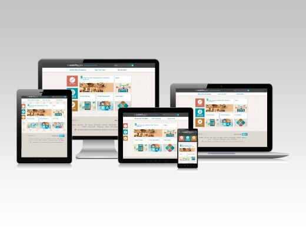

Usability.gov’s re-boot not only has a pioneering new design; it also reflects our new expanded purpose. Our goal is to reintroduce the site as a leading resource for user experience (UX) best practices. We’ve worked to add more content and content categories based on what you’ve told us you need. We also set out to make it a place for active conversation, a place to share ideas and resources, so we’ve provided information about opportunities for you to get involved with the site and other programs moving forward.
We note the growing role UX plays in social media and on the mobile platform. We used our re-boot as an opportunity to explore mobile-first design, going beyond responsive design to designing first for touch and swipe and then reverse engineering for the more traditional click and scroll. Every aspect of the evolving design was lab tested, and we thank the many people who volunteered to test for us.

How We got Here
When we began planning improvements to the site in November 2012, we chose to follow the user-centered design strategy outlined on the site. To do this, we identified:
- Who our users are and their experience levels
- What information they need, their goals, and their tasks
- What devices they use to access this information and the functions they expect
Our research connected us with UX professionals and digital communicators throughout government and in the private sector. Our findings helped us to develop a new information architecture, create and refine content, and experiment and update the design’s look and feel.
We’re Focused on Your Needs
The site is focused on what you need to create usable digital content. Since we encourage a holistic approach to building a user-centered website, you will not only find usability evaluation and user research methods and resources, you will also find information related to content strategy, information architecture, user interface design, interaction design, visual design, project management, accessibility, and analytics. The site provides:
- Overviews of each area of UX and the value of a user-centered design
- Information on how and when to use various techniques and tools
- Templates and downloadable documents that you can adapt to fit your project’s needs
- Guidance and government-specific information
- A glossary of over 300 UX terms
- Lists of trainings, publications, and other resources for new or experienced UX professional to learn more
A More Dynamic and Responsive Interface
The site, built in Drupal, the site is designed on a mobile-first model. We started with designs for a smartphone screen, and then moved up and out in size to be responsive. We envisioned a site that would invite interaction, and anticipate what you are looking for.
It features:
- A tile design that make the interface more interactive.
- A dock that stays on the left of your screen to help you navigate to those high valued pieces of content from anywhere.
- Content that has been tagged, allowing us to show you related content and resources for each page.
- Page-level surveys for you to provide feedback on whether content was helpful and how we might improve.
- Site-level survey to gauge the overall experience on the site.
- A responsive design that offers a positive and consistent user experience regardless of the device used to access the site.
Building a Community
Going forward, we plan to grow with and for the UX community. We are interested in hearing and learning from you.
- Guest blog: contributors from the public and private sectors can submit a blog for consideration. We will give attribution to those we accept.
- Connect with us on Twitter @UsabilityGov : by answering questions from users, sharing our site’s content, content in the field, events we’re presenting at, and asking for suggestions on content and ways we can improve
- Receive email updates on recent content and upcoming opportunities.
- Working with the UX Community of Practice, GSA’s First Friday’s Program and others to expand our library of resources and content
- Donate content that you think would be beneficial to others.
What to Expect Next
The work continues after today. Following launch we will be:
- Presenting and exhibiting at UXPA International in Washington DC in July 2013. Stop by and tell us what you think and what you’d like to see moving forward.
- Starting the process of updating the Research-Based Web Design & Usability Guidelines. We will be kicking this off at UXPA International Conference 2013 in Washington DC.
- Recruiting an Intern for Fall 2013 to help write and research new content and create training videos and materials.
- Reaching out to area universities post-launch for research submissions.
- Launching a Feedback Survey on the new site to see what you think.
Finally, expect on-going change. Our site, like our work, is dynamic. We look to your active participation and collaboration. So now it’s your turn; have we succeeded in building the site you wanted or needed? What have we missed? Please let us know.